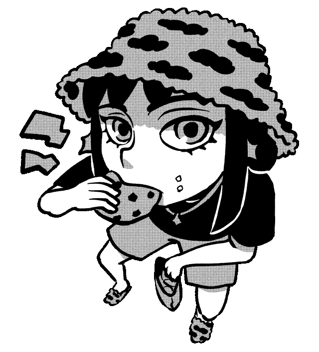

*CRUNCH*

Ich nutze Cookies um Aufrufe zu tracken, damit ich sehen kann, wie gut es läuft. Verkaufe eure Daten nicht weiter, also gerne zustimmen :-) Um deine Entscheidung zurückzusetzen, musst du deine Cookies in deinen Browsereinstellungen löschen.